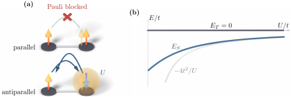

Advanced Quantum Materials 2027 · All lectures · Lecture notes
Session 6. Classical Magnetism and Magnons
6.8 From the Hubbard dimer to the Heisenberg model
Let us make this precise in the smallest possible example. We take two sites, \(0\) and \(1\), with a hopping \(t\) between them, a local repulsion \(U\) on each of them, and exactly two electrons in total, which is half filling. The Fock space at this filling has \(\binom{4}{2}=6\) states. Four of them have one electron on each site, where the electron of each site can be up or down independently. The other two have both electrons on the same site, with one electron up and one down because of Pauli exclusion.
Let us group these states by energy in the atomic limit (\(t=0\)). The four configurations with single occupation, \(|\!\uparrow,\uparrow\rangle\), \(|\!\downarrow,\downarrow\rangle\), \(|\!\uparrow,\downarrow\rangle\) and \(|\!\downarrow,\uparrow\rangle\), have no interaction energy. We call them the low-energy manifold, at energy \(0\). The two configurations with double occupation, \(|\!\uparrow\downarrow,0\rangle\) and \(|0,\uparrow\downarrow\rangle\), each have the full charging energy \(U\), and they form the high-energy manifold. In the low-energy manifold every state has exactly one electron per site, so the charge degree of freedom is completely frozen and only the spin on each site can still fluctuate. For this reason the natural low-energy effective Hamiltonian is a Hamiltonian for the spin only, and rotational invariance fixes its form up to an overall coupling, \(H_\text{eff} = J\, \mathbf S_0\cdot\mathbf S_1\), which is the two-site Heisenberg Hamiltonian. What remains is to obtain \(J\) from the microscopic \(t\) and \(U\).
The hopping, which is the perturbation, conserves the total spin, so for the parallel-spin states it cannot connect the low-energy manifold to the high-energy one at all. If we apply \(H_t\) to \(|\!\uparrow,\uparrow\rangle\), we would need to move a spin-up electron onto a site that already has one, and Pauli exclusion forbids this completely. The three parallel or triplet-like states, \(|\!\uparrow,\uparrow\rangle\), \(|\!\downarrow,\downarrow\rangle\) and the symmetric combination \(\tfrac{1}{\sqrt2}(|\!\uparrow,\downarrow\rangle+|\!\downarrow,\uparrow\rangle)\). These three states are exact eigenstates of the full Hamiltonian at energy \(E_T=0\), since the hopping does not act on them at any order. The antiparallel or singlet combination \(|S\rangle=\tfrac{1}{\sqrt2}(|\!\uparrow,\downarrow\rangle-|\!\downarrow,\uparrow\rangle)\) is different. The hopping can connect it to the symmetric combination with double occupation, \(|D\rangle=\tfrac{1}{\sqrt2}(|\!\uparrow\downarrow,0\rangle+|0,\uparrow\downarrow\rangle)\), with matrix element \(\langle D|H_t|S\rangle = -2t\). In the two-dimensional subspace \(\{|S\rangle,|D\rangle\}\), the Hamiltonian is exactly
\[H = \begin{pmatrix} 0 & -2t \\ -2t & U\end{pmatrix},\]
with exact eigenvalues \(E_\pm = \tfrac{U}{2}\pm\sqrt{(U/2)^2+4t^2}\). The energy of the singlet ground state is the lower root, \(E_S = \tfrac{U}{2}-\sqrt{(U/2)^2+4t^2}\), and if we expand it for \(U\gg t\) we obtain
\[E_S \;\approx\; -\frac{4t^2}{U} + O(t^4/U^3), \qquad E_T = 0 \text{ exactly.}\]
We compare this with the exact spectrum of the Heisenberg dimer, \(E_\text{singlet}=-\tfrac34 J\) and \(E_\text{triplet}=+\tfrac14 J\), where the singlet-triplet gap is \(\Delta E = E_T-E_S = J\), and we obtain
\[J = \frac{4t^2}{U}. \tag{6.4}\]
We have \(J>0\), which is antiferromagnetic, and the singlet is below the triplet. This confirms, with the correct numerical prefactor, the estimate of second-order perturbation theory. There the unperturbed Hamiltonian is the Hubbard term, the perturbation is the hopping, the matrix element is \(t\) and the energy denominator is \(U\). It also reproduces the \(1/U\) scaling that we found numerically for the energy difference between the ferromagnet and the antiferromagnet in Section 6.5. That mean-field energy difference per bond is one half of the exchange coupling (6.4), so the two completely different calculations, the mean-field numerics and the many-body perturbation theory, agree. Figure 6.2 shows the whole argument. It shows the Pauli blockade that protects the triplet, the virtual process that lowers the energy of the singlet, and the exact spectrum, whose splitting is \(J\).

At fixed large \(U\) the hopping \(t\) of the dimer is doubled. How does \(J\) of (6.4) change?
Show the answers
- A. ✗ False
This is false. For \(U=10t\) and \(t=1\) we get \(J=4/10=0.4\). For \(t=2\) we get \(J=16/10=1.6\), which is four times larger and not \(0.8\).
- B. ✓ True
This is true. The coupling \(J=4t^2/U\) depends on \(t^2\), so doubling \(t\) gives a factor of four. The process needs two hops, one to the doubly occupied state and one back.
- C. ✗ False
This is false. For \(t=0\) the two sites are decoupled and the singlet and triplet are degenerate, so \(J=0\). Then \(J\) has to depend on \(t\), and it follows \(t^2\) in (6.4).
Notebook check-in: session6.ipynb, “(Reminder) The spectra of a dimer,” “(Exercise) The interacting Hubbard dimer,” “Gap opening in the Hubbard model,” and “(Exercise) The strongly interacting limit”
Diagonalize the Hubbard dimer with six states directly, and check that the singlet-triplet splitting agrees with (6.4). Then take large values of \(U/t\) and check that the gap and the low-energy spectrum converge to the prediction of the Heisenberg model. This compares the exact result of this section with a direct numerical diagonalization.
Try it. In the cell, diagonalize the dimer with six states for \(U/t\) equal to 4, 8 and 16. The exact splitting \(E_T-E_S\) divided by \(4t^2/U\) is about 0.83, 0.94 and 0.98, and it approaches one as \(U/t\) grows.
- In Section 7.3 the singlet (7.3) of the Heisenberg dimer is the first example of a state that is hard to store, since it is maximally entangled.
- In Section 8.3 the same Heisenberg dimer (8.2) is compared with an Ising dimer, and its singlet ground state breaks no symmetry.
- In Section 8.5 a lattice of such singlets gives a magnet whose ground state does not break time-reversal symmetry.